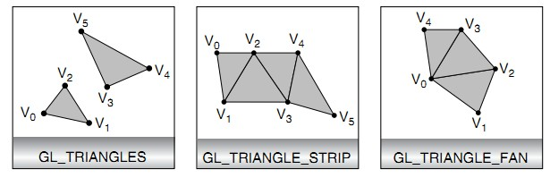

В этом уроке:
- рисуем графические примитивы
Исходники уроков доступны на гитхабе. Скачивайте проект, в нем будем использовать модуль lesson170_primitives.
На прошлом уроке мы разбирались, как передать в шейдеры данные о вершинах и получить в итоге треугольник. Чтобы этот механизм стал более понятен, попробуем развить тему, и создадим несколько примеров по передаче данных о вершинах и построения разных графических примитивов (точка, линия и треугольник) из этих вершин.
Треугольник
Сейчас наше приложение рисует один треугольник. Если мы посмотрим на класс OpenGLRenderer, то в методе prepareData увидим в нем список вершин:
float[] vertices = { -0.5f, -0.2f, 0.0f, 0.2f, 0.5f, -0.2f, }; Каждая пара значений – это координаты (x,y) одной вершины. Три пары = три вершины = треугольник.
Далее, в методе onDrawFrame мы используем метод glDrawArrays чтобы нарисовать треугольник.
@Override public void onDrawFrame(GL10 arg0) {
glClear(GL_COLOR_BUFFER_BIT);
glDrawArrays(GL_TRIANGLES, 0, 3);
}
GL_TRIANGLES - тип примитива, который необходимо нарисовать, треугольник в нашем случае
0 - вершины надо брать из массива начиная с позиции 0, т.е. с самой первой
3 - означает, что для рисования необходимо использовать три вершины
Запускаем приложение
![]()
Теперь попробуем нарисовать 4 треугольника. Для этого нам понадобится больше вершин. 4 треугольника, в каждом по три вершины, значит нам нужно 3*4=12 вершин.
Перепишем массив vertices в методе prepareData
float[] vertices = {
// треугольник 1
-0.9f, 0.8f, -0.9f, 0.2f, -0.5f, 0.8f,
// треугольник 2
-0.6f, 0.2f, -0.2f, 0.2f, -0.2f, 0.8f,
// треугольник 3
0.1f, 0.8f, 0.1f, 0.2f, 0.5f, 0.8f,
// треугольник 4
0.1f, 0.2f, 0.5f, 0.2f, 0.5f, 0.8f,
};
Теперь у нас есть 12 вершин из которых можно построить 4 треугольника.
Запускаем
![]()
Но видим только один треугольник вместо 4-х. Мы забыли сказать системе, что надо рисовать треугольники используя 12 вершин. Т.е. в метод glDrawArrays мы до сих пор передаем значение 3, а это значит что система возьмет из массива значения, чтобы нарисовать только три вершины.
Перепишем onDrawFrame
@Override public void onDrawFrame(GL10 arg0) {
glClear(GL_COLOR_BUFFER_BIT);
glDrawArrays(GL_TRIANGLES, 0, 12);
}
В методе glDrawArrays укажем 12 вместо 3. Теперь система будет знать, что из массива ей необходимо использовать данные, чтобы сформировать 12 вершин для рисования треугольников, и мы получим 4 треугольника.
Запускаем
![]()
Видим два треугольника и прямоугольник. Этот прямоугольник на самом деле состоит из двух треугольников, расположенных впритык друг к другу.
Посмотрите на массив вершин и обратите внимание, что у треугольников 3 и 4 есть общие вершины (0.1f, 0.2f) и (0.5f, 0.8f). Вот по этой стороне они и соединились образовав прямоугольник.
В итоге мы получили 4 треугольника, два из которых выглядят, как один прямоугольник.
Типы треугольников
Чтобы нарисовать треугольник, мы передаем тип GL_TRIANGLES в метод glDrawArrays. Существует еще два типа отрисовки треугольников: GL_TRIANGLE_STRIP и GL_TRIANGLE_FAN.
В чем разница между ними? Смотрим рисунок

GL_TRIANGLES – каждые три переданные вершины образуют треугольник. Т.е.
v0, v1, v2 – первый треугольник
v3, v4, v5 – второй треугольник
GL_TRIANGLE_STRIP – каждый следующий треугольник использует две последние вершины предыдущего
v0, v1, v2 – первый треугольник
v1, v2, v3 – второй треугольник
v2, v3, v4 – третий треугольник
v3, v4, v5 – четвертый треугольник
GL_TRIANGLE_FAN – каждый следующий треугольник использует последнюю вершину предыдущего и самую первую вершину
v0, v1, v2 – первый треугольник
v0, v2, v3 – второй треугольник
v0, v3, v4 – третий треугольник
Рассмотрим эти типы на примерах
Задаем 6 вершин в prepareData:
float[] vertices = { 0.1f, 0.8f, 0.1f, 0.2f, 0.5f, 0.8f, 0.1f, 0.2f, 0.5f, 0.2f, 0.5f, 0.8f, };
тип GL_TRIANGLES и 6 вершин в glDrawArrays:
glDrawArrays(GL_TRIANGLES, 0, 6);
Запускаем
![]()
Получаем прямоугольник, составленный из двух треугольников.
Теперь нарисуем тот же прямоугольник, но чуть по-другому
Задаем 4 вершины
float[] vertices = { 0.1f, 0.8f, 0.1f, 0.2f, 0.5f, 0.8f, 0.5f, 0.2f, };
тип GL_TRIANGLE_STRIP и 4 вершины
glDrawArrays(GL_TRIANGLE_STRIP, 0, 4);Если у вас среда разработки ругается на константу GL_TRIANGLE_STRIP, то добавьте ее в импорт в начале класса:
import static android.opengl.GLES20.GL_TRIANGLE_STRIP;
И для всех последующих констант делайте аналогично.
Запускаем
![]()
Результат тот же, но в этот раз мы использовали 4 вершины, а не 6. Тип треугольника GL_TRIANGLE_STRIP помог немного сэкономить. В данном примере это конечно не особо критично, но, в целом, чем меньше вершин нам приходится передавать, тем выше скорость работы приложения.
Рассмотрим последний тип. Задаем 8 вершин
float[] vertices = {
0.0f, 0.0f,
-0.4f, 0.4f,
0.4f, 0.4f,
0.8f, 0.0f,
0.4f, -0.4f,
-0.4f, -0.4f,
-0.8f, 0.0f,
-0.4f, 0.4f,
};
тип GL_TRIANGLE_FAN и 8 вершин
glDrawArrays(GL_TRIANGLE_FAN, 0, 8);Запускаем
![]()
Получили шестиугольник. Для этого мы указали центральную вершину и вершины-углы, и в режиме GL_TRIANGLE_FAN система нарисовала шестиугольник.
Линия
Переходим к линии. Чтобы нарисовать линию нам необходимо указать две вершины.
Задаем их в массиве:
float[] vertices = { -0.9f, -0.9f, 0.9f, 0.9f, };
И перепишем onDrawFrame:
@Override
public void onDrawFrame(GL10 arg0) {
glClear(GL_COLOR_BUFFER_BIT);
glDrawArrays(GL_LINES, 0, 2);
}
Используем константу GL_LINES и указываем, что надо использовать две вершины.
Запускаем
![]()
С одной линией все понятно, попробуем нарисовать три линии.
Указываем вершины
float[] vertices = {
// линия 1
-0.9f, -0.9f, 0.9f, 0.9f,
// линия 2
-0.5f, 0.0f, 0.5f, 0.0f,
// линия 3
0.0f, 0.7f, 0.0f, -0.7f,
};
Не забываем указать в glDrawArrays, что необходимо использовать 6 вершин, и зададим толщину линии = 5.
@Override
public void onDrawFrame(GL10 arg0) {
glClear(GL_COLOR_BUFFER_BIT);
glLineWidth(5);
glDrawArrays(GL_LINES, 0, 6);
}
Запускаем
![]()
Нарисованы три линии
Типы линий
Существует три типа отрисовки линий. Разберем их на примерах.
Тип GL_LINES мы уже использовали, он просто берет попарно вершины и рисует линии между ними. Т.е. если у нас есть вершины (v0, v1, v2, v3, v4, v5), то мы получим три линии (v0,v1), (v2,v3) и (v4,v5).
Задаем вершины
float[] vertices = {
-0.4f, 0.6f,
0.4f, 0.6f,
0.6f, 0.4f,
0.6f, -0.4f,
0.4f, -0.6f,
-0.4f, -0.6f,
};
Указываем тип GL_LINES, 6 вершин
glDrawArrays(GL_LINES, 0, 6);
Запускаем
![]()
Каждая пара вершин образовала линию.
Тип GL_LINE_STRIP рисует линии не попарно, а последовательно между всеми вершинами. Т.е. если у нас есть вершины (v0, v1, v2, v3, v4, v5), то мы получим пять линий (v0,v1), (v1,v2), (v2,v3), (v3,v4) и (v4,v5).
Вершины мы будем использовать те же, а тип поменяем на GL_LINE_STRIP
glDrawArrays(GL_LINE_STRIP, 0, 6); Запускаем
![]()
Линии нарисованы последовательно между всеми вершинами
Тип GL_LINE_LOOP аналогичен GL_LINE_STRIP, только он вдобавок еще рисует линию между первой и последней точкой.
Меняем тип на GL_LINE_LOOP
glDrawArrays(GL_LINE_LOOP, 0, 6);
Запускаем
![]()
Результат тот же, что и при GL_LINE_STRIP, плюс есть линия между первой и последней вершинами.
Точка
Осталось рассмотреть точку. Здесь уже нет никаких разных типов, только GL_POINTS.
Укажем его в glDrawArrays:
@Override
public void onDrawFrame(GL10 arg0) {
glClear(GL_COLOR_BUFFER_BIT);
glDrawArrays(GL_POINTS, 0, 6);
}
Вершины оставим те же.
Толщину точки можно задать в вершинном шейдере, используя переменную gl_PointSize.
vertex_shader.glsl
attribute vec4 a_Position;
void main() {
gl_Position = a_Position;
gl_PointSize = 5.0;
}
Запускаем
![]()
Нарисованы 6 точек
Ну и напоследок давайте нарисуем сразу несколько разных примитивов, например: 4 треугольника, 2 линии, 3 точки
4 треугольника – это 4 * 3 = 12 вершин
2 линии – это 2 * 2 = 4 вершины
3 точки – это 3 вершины
Итого нам нужно задать 12 + 4 + 3 = 19 вершин
float[] vertices = {
// треугольник 1
-0.9f, 0.8f, -0.9f, 0.2f, -0.5f, 0.8f,
// треугольник 2
-0.6f, 0.2f, -0.2f, 0.2f, -0.2f, 0.8f,
// треугольник 3
0.1f, 0.8f, 0.1f, 0.2f, 0.5f, 0.8f,
// треугольник 4
0.1f, 0.2f, 0.5f, 0.2f, 0.5f, 0.8f,
// линия 1
-0.7f, -0.1f, 0.7f, -0.1f,
// линия 2
-0.6f, -0.2f, 0.6f, -0.2f,
// точка 1
-0.5f, -0.3f,
// точка 2
0.0f, -0.3f,
// точка 3
0.5f, -0.3f,
};
Перепишем onDrawFrame
@Override
public void onDrawFrame(GL10 arg0) {
glClear(GL_COLOR_BUFFER_BIT);
glLineWidth(5);
glDrawArrays(GL_TRIANGLES, 0, 12);
glDrawArrays(GL_LINES, 12, 4);
glDrawArrays(GL_POINTS, 16, 3);
}
Мы три раза вызываем метод glDrawArrays.
Первый вызов говорит системе о том, что надо нарисовать треугольники и использовать при этом 12 вершин, начиная с первой в массиве (индекс 0).
Второй вызов говорит системе о том, что надо нарисовать линии и использовать при этом 4 вершины, начиная с тринадцатой в массиве (индекс 12). Начинаем с тринадцатой потому, что первые 12 вершин в массиве мы использовали, чтобы задать треугольники, а вершины линий у нас идут начиная с тринадцатой.
Третий вызов говорит системе о том, что надо нарисовать точки и использовать при этом 3 вершины, начиная с семнадцатой в массиве (индекс 16). Начинаем с семнадцатой потому, что первые 12 вершин в массиве мы использовали, чтобы задать треугольники, следующие 4 вершины мы использовали, чтобы задать линии, а вершины точек у нас идут начиная с семнадцатой.
Запускаем
![]()
Система нарисовала 4 треугольника (2 их из них образуют прямоугольник), 2 линии и три точки.
Надеюсь, стала понятнее связь между массивом вершин и методом glDrawArrays. Т.е. в glDrawArrays мы указываем какие фигуры рисовать и сколько вершин для этого использовать, а данные по вершинам система берет из массива vertices. Возможно осталось непонятным, например, как система определяет, что для вершины надо брать именно 2 точки из массива vertices. Это мы подробно разберем на следующем уроке и алгоритм передачи данных в шейдеры станет полностью понятным.